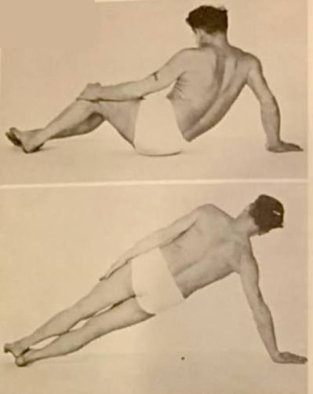

He was not supposed to be strong. Born in 1883 near Düsseldorf, Germany, Joseph Pilates was a sickly child — asthma, rickets, rheumatic fever, all three at once, the kind of childhood that gets you bullied rather than admired. The family name didn’t help: other children taunted the Pilates kids as descendants of Pontius Pilate. His younger brother Fred later described what that bullying actually looked like — other boys held five-year-old Joseph down and struck him with a stone, blinding him in one eye. “This is when he made up his mind to become strong,” Fred recalled. He wasn’t exaggerating: once Joseph had rebuilt himself, he turned around and taught Fred the same discipline.
He decided not to stay one. With his father — a gymnast — pushing him, Joseph took up gymnastics, bodybuilding, and boxing. By fourteen he’d rebuilt himself so completely that he was posing for anatomical charts. He kept going: skiing, diving, wrestling, gymnastics. In 1912 he moved to England, where he made a living as a boxer and a circus performer, and — by some accounts — was brought in to teach self-defense to police.
Then came the war. As a German national in England, Joseph was interned for the duration of World War I. He didn’t stop moving. He taught exercise to his fellow internees, and when some of them were too sick or injured to get out of bed, he rigged springs to the bed frames so they could still resist against something. That’s the exercise apparatus, in its rawest form — the ancestor of the reformer and the Cadillac, invented out of necessity in a prison camp.
He immigrated to New York in 1926 and opened a studio with his wife, Clara, at 939 Eighth Avenue. He called the method Contrology. He never called it Pilates — that name came later, from everyone else.
Here’s the part that doesn’t fit the poster version of him: Joseph Pilates smoked and drank, openly and constantly, while running a studio built on the idea that the body could be perfected through discipline. He told a reporter in 1964 that he drank a quart of liquor a day, plus beer, and smoked around fifteen cigars. He taught classes in tiny shorts with a cigar in his hand. His own line for it was blunt: “Look at me — smoking and drinking and loving!” He wasn’t hiding the contradiction. He was daring you to explain how he was still standing.
He kept teaching into his eighties, well past the point most people slow down, and he died in 1967 at 83.
